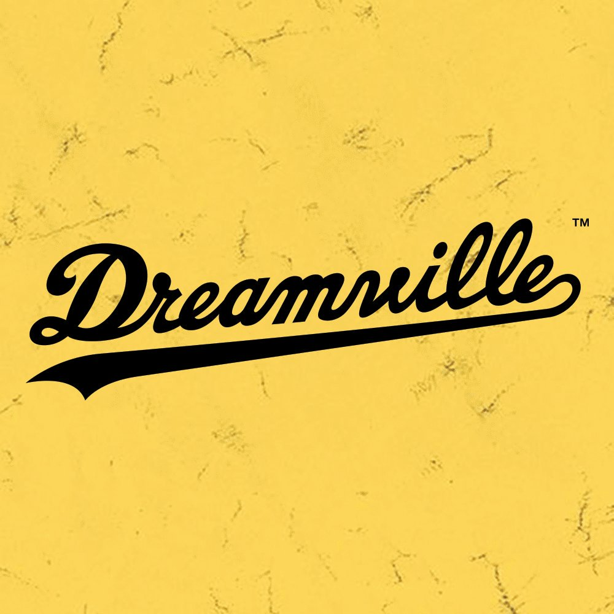

J. Cole is a rapper and producer who signed on with Jay Z's Roc Nation in 2009 and has produced for artists like Kendrick Lamar and Janet Jackson.
Who Is J. Cole?
J. Cole is an MC and producer who has achieved phenomenal success over the last few years, a result of the long hours he spent grinding hard on the mixtape scene and sharing songs on internet forums. Since signing to Jay Z’s Roc Nation, he has toured worldwide, sold huge amounts of records, produced for Kendrick Lamar and even come to the attention of Barack Obama. Along with establishing his own nonprofit foundation, he keeps up a busy release schedule. No wonder Drake paid him the highest compliment: “You are looking at one of the smartest, greatest, most legendary artists of our generation.”
Born in Germany, Raised in North Carolina
Jermaine Lamarr Cole was born on January 28, 1985, at a U.S. Army base in Frankfurt, then in West
Germany.
His father, an African-American soldier, left his mother, a white German postal worker, when Cole was a
baby. She moved with him and his older brother, Zach, to Fayetteville, North Carolina, where the family
lived in trailer parks as she struggled to make ends meet.
His mom eventually remarried — Cole's stepfather was also in the Army — and the family relocated to a
nicer
home. However, the marriage crumbled and the family lost the house as Cole was about to leave for
college.
His stepfather had become abusive, particularly toward Zach; after the marriage ended, Cole's mother
became
addicted to crack under the influence of a new boyfriend.
 It was in Fayetteville that Cole's passion for music found an early outlet when he joined the Terry
Sanford
Orchestra as a violinist. He also began to teach himself rapping and production, rapping first as Blaza,
then as Therapist — “We used to look through the dictionary for rap names,” he recalled later — before
hooking up with a local group called Bomm Sheltuh.
He held down a number of part-time jobs as a teenager while he honed his production skills, including a
stint at an ice hockey rink where he had to dress up as a kangaroo mascot. After graduating from high
school, Cole moved to New York and attended St John’s University, graduating magna cum laude in 2007
with a
degree in communications.
It was in Fayetteville that Cole's passion for music found an early outlet when he joined the Terry
Sanford
Orchestra as a violinist. He also began to teach himself rapping and production, rapping first as Blaza,
then as Therapist — “We used to look through the dictionary for rap names,” he recalled later — before
hooking up with a local group called Bomm Sheltuh.
He held down a number of part-time jobs as a teenager while he honed his production skills, including a
stint at an ice hockey rink where he had to dress up as a kangaroo mascot. After graduating from high
school, Cole moved to New York and attended St John’s University, graduating magna cum laude in 2007
with a
degree in communications.
Getting Signed to Roc Nation
His debut mixtape, The Come Up, also came out in 2007. It was largely self-produced, but also saw him rapping over beats from Kanye West, Large Professor and Just Blaze. A track called "Lights Please" from his second mixtape, The Warm Up (2009), came to the attention of the producer and music exec Mark Pitts, who played it to Jay Z. Ironically, Cole had attempted to give Jay Z a copy himself, after waiting outside a studio to meet his idol for three hours — only to be rebuffed with the line “Man, I don't want that shit.” But Pitts had Jay Z's ear, and the mogul was impressed with what he heard. Cole signed to Roc Nation and started to appear as a guest on tracks by Wale, Jay Z and Talib Kweli. A third mixtape in 2010, Friday Night Lights, consisted of songs rejected from Cole’s debut studio album. That album, Cole World: The Sideline Story, finally saw the light of day in 2011 and would go on to be certified platinum. Critics hailed a promising artist, with the L.A. Times praising the “satisfying confidence” of his rhymes and the “slickly inventive beats.”
Going No. 1: '2014 Forest Hills Drive' & '4 Your Eyez Only'
Cole's sophomore album, Born Sinner, had its release date moved numerous times so as not to clash with other big releases. When it eventually came out in June 2013, it was another success. Kendrick Lamar and 50 Cent were among the guests, on an album that was warmly, but not ecstatically, received. With momentum building, 2014 Forest Hills Drive came out in December 2014 and premiered at No. 1 on the Billboard 200, despite a lack of advance singles or marketing. It won several awards, including Billboard Rap Album of the Year, and was later certified double platinum. This was impressive for an album that had no guest appearances, although some critics felt his political stances in real life were not reflected on an album that often strayed into sex rhymes. “It’s time for the Cole who marches in the streets to start showing up on record,” said Rolling Stone, referring to Cole’s visit to Ferguson in August 2014 to meet those protesting the shooting of Michael Brown. His fourth studio album, 4 Your Eyez Only, came out just before Christmas 2016 and also went to No.1. Despite a minor controversy over what some saw as lyrical barbs directed at Kanye West and Drake, it was another guest-free set that found favor. The New York Times suggested that by freeing himself of the shackles of big-name guest stars, Cole could take his own artistic path, noting that the album “feels as if it were made without the slightest concession to what’s happening elsewhere in the genre.”
Making History with 'KOD'
The rapper's audience eagerly welcomed the April 2018 release of his fifth studio album, KOD, which shattered Spotify's opening-day streaming record en route to the Billboard top spot. Days later, it was announced that Cole had become the first artist to debut three simultaneous singles on the Billboard Hot 100, with "Kevin's Heart," "ATM" and KOD's title track all surfacing on the chart.
Establishing His Own Label, Nonprofit Work
As a thoughtful, contemplative rapper, J. Cole generally stays away from beefing with other artists or living a gaudy, front-page lifestyle. He runs the Dreamville Records label with his former St. John's University classmate Ibrahim Hamad, releasing music by up-and-coming artists including Omen, Bas and Cozz. The label shares a name with his Dreamville Foundation, a non-profit Cole established in his hometown. Set up to “bridge the gap between the worlds of opportunity and the urban youth of Fayetteville, NC,” it runs a series of events and programs, including a reading club and essay contests. Cole is married to Melissa Heholt, with whom he has a child. He recently purchased the childhood home after which he named his 2014 Forest Hills Drive album, with the intention of developing it into temporary rent-free accommodation for single mothers. It's actions like this that have made him a rapper that even presidents can praise. Cole was invited to the White House to meet with Barack Obama in spring 2016, something he rapped about on the track "High for Hours." Obama later commented: “This is the benefit of having teenage daughters, I actually keep up… I love J. Cole.” Endorsements don’t come much bigger.